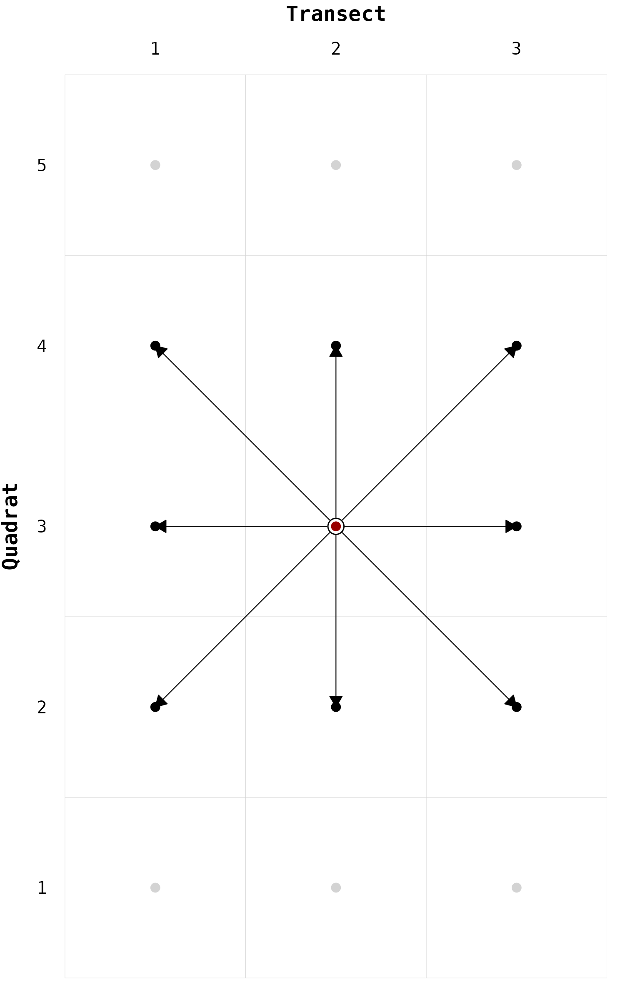
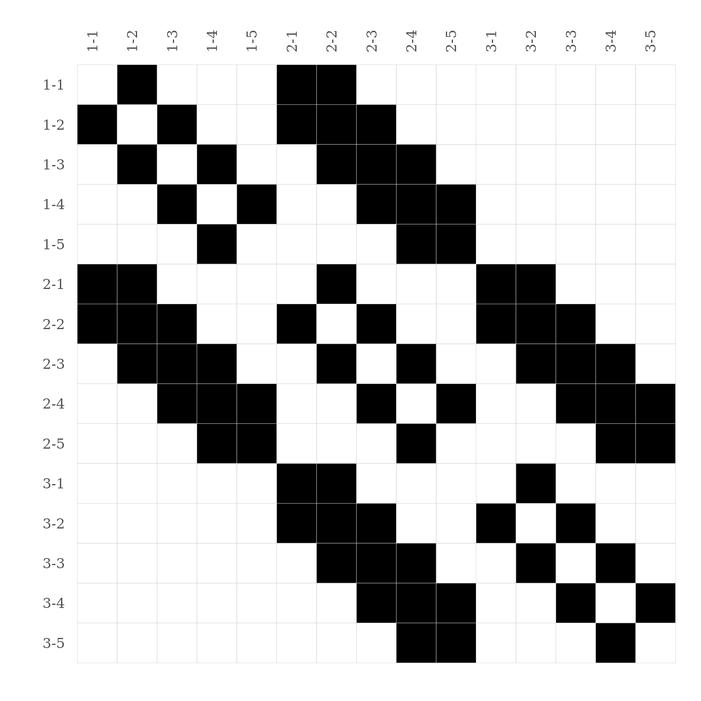
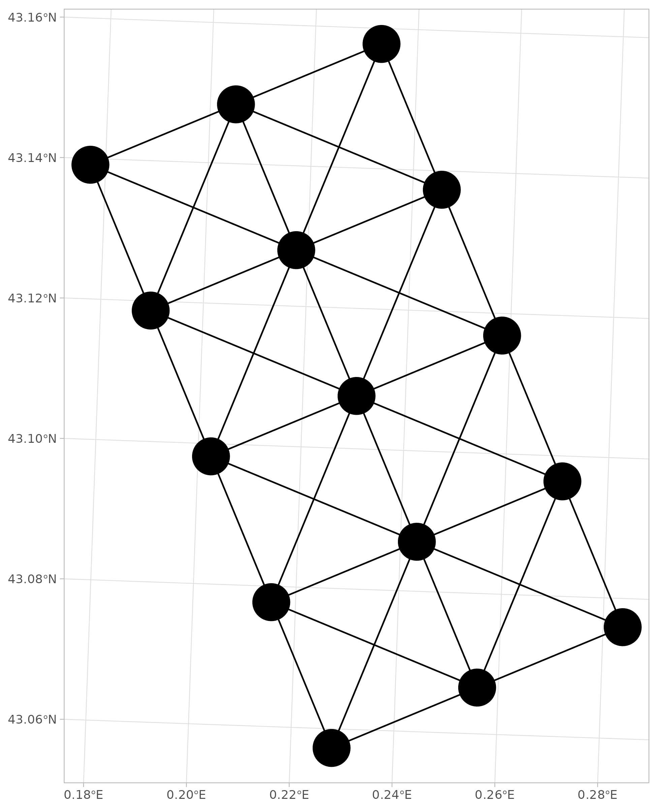
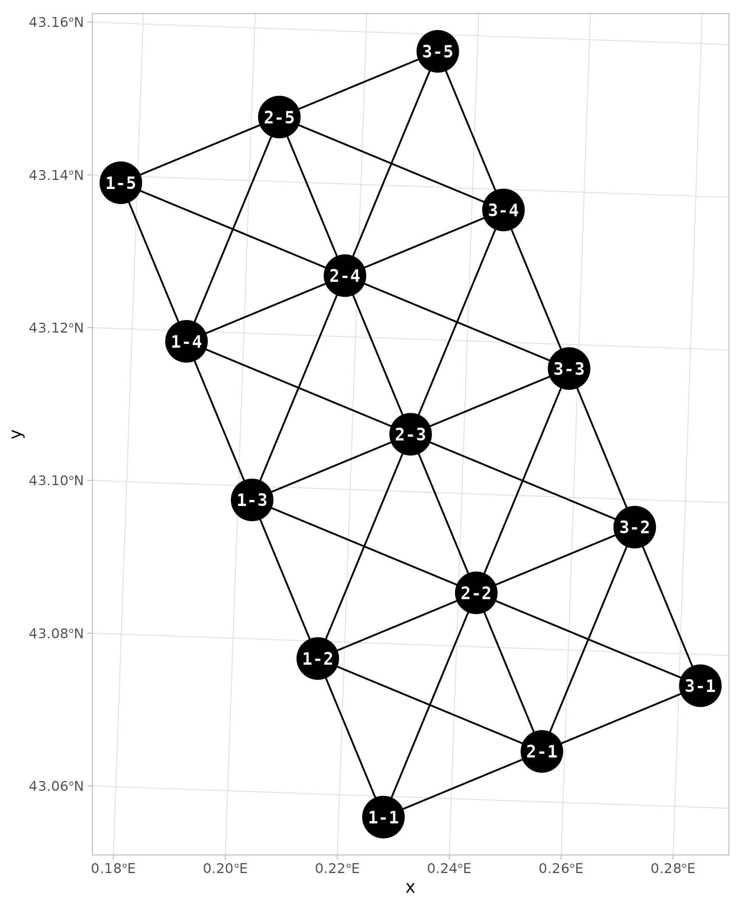

The package chessboard provides some plotting functions
to:
All these functions have been implemented using the ggplot2 package,
meaning that they are highly customizable.
# Setup ----
library("chessboard")
library("ggplot2")To illustrate these plotting functions, let’s import the data
provided by chessboard (see the Case
study vignette for a full description).
# Location of the data ----
path_to_file <- system.file("extdata", "adour_survey_sampling.csv",
package = "chessboard")
# Read the data ----
sampling <- read.csv(path_to_file)
head(sampling)
#> location transect quadrat longitude latitude
#> 1 1 1 1 474036.9 6221518
#> 2 1 1 2 473080.0 6223828
#> 3 1 1 3 472123.1 6226138
#> 4 1 1 4 471166.2 6228448
#> 5 1 1 5 470209.3 6230758
#> 6 1 2 1 476347.0 6222475For the purpose of this vignette, let’s subset the first location.
# Subset location 1 ----
sampling <- sampling[sampling$"location" == 1, ]
sampling
#> location transect quadrat longitude latitude
#> 1 1 1 1 474036.9 6221518
#> 2 1 1 2 473080.0 6223828
#> 3 1 1 3 472123.1 6226138
#> 4 1 1 4 471166.2 6228448
#> 5 1 1 5 470209.3 6230758
#> 6 1 2 1 476347.0 6222475
#> 7 1 2 2 475390.1 6224785
#> 8 1 2 3 474433.2 6227095
#> 9 1 2 4 473476.3 6229405
#> 10 1 2 5 472519.5 6231715
#> 11 1 3 1 478657.1 6223432
#> 12 1 3 2 477700.2 6225742
#> 13 1 3 3 476743.4 6228052
#> 14 1 3 4 475786.5 6230362
#> 15 1 3 5 474829.6 6232672The sampling is a grid of dimensions 3 transects x 5 quadrats.
When working with chessboard, the first step is to
create nodes labels with the function
create_nodes_labels().
# Create nodes labels ----
nodes <- create_nodes_labels(data = sampling,
location = "location",
transect = "transect",
quadrat = "quadrat")
nodes
#> node location transect quadrat longitude latitude
#> 1 1-1 1 1 1 474036.9 6221518
#> 2 1-2 1 1 2 473080.0 6223828
#> 3 1-3 1 1 3 472123.1 6226138
#> 4 1-4 1 1 4 471166.2 6228448
#> 5 1-5 1 1 5 470209.3 6230758
#> 6 2-1 1 2 1 476347.0 6222475
#> 7 2-2 1 2 2 475390.1 6224785
#> 8 2-3 1 2 3 474433.2 6227095
#> 9 2-4 1 2 4 473476.3 6229405
#> 10 2-5 1 2 5 472519.5 6231715
#> 11 3-1 1 3 1 478657.1 6223432
#> 12 3-2 1 3 2 477700.2 6225742
#> 13 3-3 1 3 3 476743.4 6228052
#> 14 3-4 1 3 4 475786.5 6230362
#> 15 3-5 1 3 5 474829.6 6232672The first plotting function to use is gg_chessboard():
it will plot the (spatial) sampling as a chessboard, i.e. two-dimension
grid where the x-axis is the transect and the y-axis is the quadrat.
# Plot the sampling as a chessboard ----
gg_chessboard(nodes)
On this chessboard, we can locate one specific node using the
function geom_piece().
# Locate one node ----
gg_chessboard(nodes) +
geom_piece(nodes, focus = "2-3")We can call the function geom_piece() several times to
emphase various nodes.
# Locate various nodes ----
gg_chessboard(nodes) +
geom_piece(nodes, focus = "2-3") +
geom_piece(nodes, focus = "1-5") +
geom_piece(nodes, focus = "3-1")
As mentioned in the Get
started vignette, we can test the neighbors detection of a specific
node by using the functions pawn(), fool(),
rook(), etc.
Let’s apply the function rook() on the node
2-3.
# Neighbors detection ----
nb_rook <- rook(nodes, focus = "2-3")
nb_rook
#> node location transect quadrat longitude latitude
#> 1 1-3 1 1 3 472123.1 6226138
#> 2 2-2 1 2 2 475390.1 6224785
#> 3 2-4 1 2 4 473476.3 6229405
#> 4 3-3 1 3 3 476743.4 6228052Let’s visualize these neighbors on a chessboard by using the function
geom_neighbors().
# Locate neighbors ----
gg_chessboard(nodes) +
geom_piece(nodes, focus = "2-3") +
geom_neighbors(nodes, neighbors = nb_rook)
Instead of plotting the neighbors, we can directly plot the edges
using the function geom_edges(). This function has the
advantage to show the direction of the edges.
# Locate neighbors ----
gg_chessboard(nodes) +
geom_edges(nodes, focus = "2-3", neighbors = nb_rook) +
geom_piece(nodes, focus = "2-3")
Now let’s call the function bishop() to create a second
edges list.
# Neighbors detection ----
nb_bishop <- bishop(nodes, focus = "2-3")
nb_bishop
#> node location transect quadrat longitude latitude
#> 1 1-2 1 1 2 473080.0 6223828
#> 2 1-4 1 1 4 471166.2 6228448
#> 3 3-2 1 3 2 477700.2 6225742
#> 4 3-4 1 3 4 475786.5 6230362As for the function geom_piece(), we can call the
functions geom_edges() and geom_neighbors()
several times.
# Locate neighbors ----
gg_chessboard(nodes) +
geom_edges(nodes, focus = "2-3", neighbors = nb_rook) +
geom_edges(nodes, focus = "2-3", neighbors = nb_bishop) +
geom_neighbors(nodes, neighbors = nb_rook) +
geom_neighbors(nodes, neighbors = nb_bishop) +
geom_piece(nodes, focus = "2-3")
These two previous moves (rook and bishop) combined together are equivalent to the queen. For the rest of the vignette let’s create the edges list using the queen move.
# Edges list ----
edges <- create_edges_list(nodes, method = "queen")
head(edges)
#> from to
#> 1 1-1 1-2
#> 2 1-1 2-1
#> 3 1-1 2-2
#> 4 1-2 1-1
#> 5 1-2 1-3
#> 6 1-2 2-1From this edges list, we can build the associated connectivity matrix
with the function connectivity_matrix().
# Connectivity matrix ----
mat <- connectivity_matrix(edges)
mat
#> 1-1 1-2 1-3 1-4 1-5 2-1 2-2 2-3 2-4 2-5 3-1 3-2 3-3 3-4 3-5
#> 1-1 0 1 0 0 0 1 1 0 0 0 0 0 0 0 0
#> 1-2 1 0 1 0 0 1 1 1 0 0 0 0 0 0 0
#> 1-3 0 1 0 1 0 0 1 1 1 0 0 0 0 0 0
#> 1-4 0 0 1 0 1 0 0 1 1 1 0 0 0 0 0
#> 1-5 0 0 0 1 0 0 0 0 1 1 0 0 0 0 0
#> 2-1 1 1 0 0 0 0 1 0 0 0 1 1 0 0 0
#> 2-2 1 1 1 0 0 1 0 1 0 0 1 1 1 0 0
#> 2-3 0 1 1 1 0 0 1 0 1 0 0 1 1 1 0
#> 2-4 0 0 1 1 1 0 0 1 0 1 0 0 1 1 1
#> 2-5 0 0 0 1 1 0 0 0 1 0 0 0 0 1 1
#> 3-1 0 0 0 0 0 1 1 0 0 0 0 1 0 0 0
#> 3-2 0 0 0 0 0 1 1 1 0 0 1 0 1 0 0
#> 3-3 0 0 0 0 0 0 1 1 1 0 0 1 0 1 0
#> 3-4 0 0 0 0 0 0 0 1 1 1 0 0 1 0 1
#> 3-5 0 0 0 0 0 0 0 0 1 1 0 0 0 1 0A better way to visualize any kind of matrices, is to call the
function gg_matrix().
# Visualize matrix ----
gg_matrix(mat)
Now, let’s go back into a spatial world. First let’s convert our
sampling into an sf object.
# Convert sampling to sf object ----
nodes_sf <- sf::st_as_sf(nodes,
coords = c("longitude", "latitude"),
crs = "epsg:2154")
nodes_sf
#> Simple feature collection with 15 features and 4 fields
#> Geometry type: POINT
#> Dimension: XY
#> Bounding box: xmin: 470209.3 ymin: 6221518 xmax: 478657.1 ymax: 6232672
#> Projected CRS: RGF93 v1 / Lambert-93
#> First 10 features:
#> node location transect quadrat geometry
#> 1 1-1 1 1 1 POINT (474036.9 6221518)
#> 2 1-2 1 1 2 POINT (473080 6223828)
#> 3 1-3 1 1 3 POINT (472123.1 6226138)
#> 4 1-4 1 1 4 POINT (471166.2 6228448)
#> 5 1-5 1 1 5 POINT (470209.3 6230758)
#> 6 2-1 1 2 1 POINT (476347 6222475)
#> 7 2-2 1 2 2 POINT (475390.1 6224785)
#> 8 2-3 1 2 3 POINT (474433.2 6227095)
#> 9 2-4 1 2 4 POINT (473476.3 6229405)
#> 10 2-5 1 2 5 POINT (472519.5 6231715)To convert our edges list into a spatial object, we can use the
function edges_to_sf().
# Convert edges to sf object ----
edges_sf <- edges_to_sf(edges, nodes_sf)
edges_sf
#> Simple feature collection with 76 features and 2 fields
#> Geometry type: LINESTRING
#> Dimension: XY
#> Bounding box: xmin: 470209.3 ymin: 6221518 xmax: 478657.1 ymax: 6232672
#> Projected CRS: RGF93 v1 / Lambert-93
#> First 10 features:
#> from to geometry
#> 1 1-1 1-2 LINESTRING (474036.9 622151...
#> 2 1-1 2-1 LINESTRING (474036.9 622151...
#> 3 1-1 2-2 LINESTRING (474036.9 622151...
#> 4 1-2 1-1 LINESTRING (473080 6223828,...
#> 5 1-2 1-3 LINESTRING (473080 6223828,...
#> 6 1-2 2-1 LINESTRING (473080 6223828,...
#> 7 1-2 2-2 LINESTRING (473080 6223828,...
#> 8 1-2 2-3 LINESTRING (473080 6223828,...
#> 9 1-3 1-2 LINESTRING (472123.1 622613...
#> 10 1-3 1-4 LINESTRING (472123.1 622613...The result is a collection of LINESTRINGS, i.e. a
collection of spatial lines where each line is an edge defined in the
coordinate system (CRS) of the sampling.
Let’s use ggplot2 and sf to map the nodes
and the edges.
# Map of nodes and edges ----
ggplot() +
geom_sf(data = edges_sf) +
geom_sf(data = nodes_sf, size = 12) +
theme_light()
Finally, let’s add the nodes labels on this map.
# Map of nodes and edges ----
ggplot() +
geom_sf(data = edges_sf) +
geom_sf(data = nodes_sf, size = 12) +
geom_sf_text(data = nodes_sf, aes(label = node),
color = "white", fontface = "bold",
family = "mono") +
theme_light()